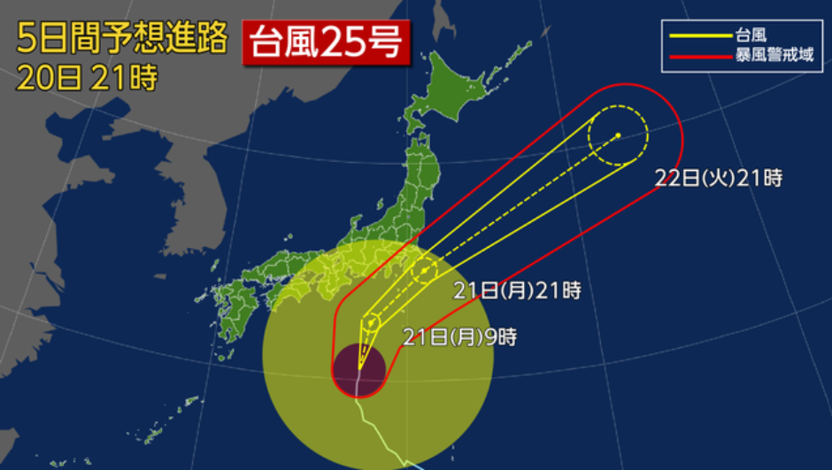

※進路図はNHKサイトと同じものを使用しております。
台風25号は暴風域を伴った状態で、明日～明後日にかけて東海～関東、東北に最も接近する恐れが出てきております。
東海や関東では月曜、東北では月曜～火曜にかけては警報級の大雨や暴風となる可能性があります。
予想より陸地に近づけばより天気が荒れる可能性もあり、予想より陸地から離れた場合は風がそこまで強くならない可能性もあります。
大雨や暴風、高波に明日は注意が必要です。大雨被害のあった千葉県や名古屋では既に地盤が緩んでいますので、特に警戒して下さい。
交通機関にも影響が出る恐れがありますので、最新の気象情報に加え、交通情報も確認してください。
電車は運転の見合わせ、徐行運転のいずれかが考えられます。
明日は早めの帰宅をお勧めします。